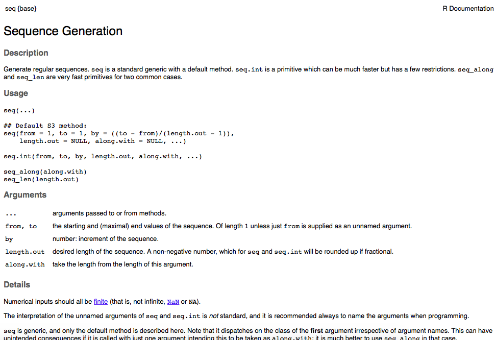

Part 1: Introduction to R
BIOS 967: Intro to R for Biologists
Dai Shizuka
updated 11/06/24
1.1 What is R?
R is a language that allows you to do data manipulation, conduct any data analysis you can think of, produce beautiful graphs, put together and run simple models, simulations, randomizations… you name it.
Pros:
- It’s all free, and it works across platforms
(Linux, Mac, PC).
- Packages: free access to bundles of functions that allow you to do all kinds of stats, graphics, etc. You name it, there is probably a package for it. These are open source, which means that there are people who are constantly working to introduce new & improved packages. This also means that R packages are often more up-to-date than some bigger stats software.
- Graphics are very pretty. Once you get the hang of
it, you will be able to generate publication-quality figures in R.
- Reproducibility: Codes/Scripts = perfect record of
everything you’ve done. You can apply the exact same analysis to
different datasets without mistake. You know exactly what you did, and
you can share this with collaborators without miscommunication.
- Simulations and models: If you’ve never been able
to create your own simulations or theoretical models, you will be able
to do them once you start learning R.
- Statistical Analyses: Most likely, it will also
help you learn the proper ways to do stats instead of relying on canned
functions in stats software.
- Community: Lots of online forums and help
Drawbacks:
- You have to learn a language.
1.2 Working with RStudio
In this class, we will be using an open-source software called RStudio. RStudio is an IDE (Integrated Development Environment)–a fancy word for software that organizes windows and provides a layout that helps make programming easier. Strictly speaking, you don’t really need RStudio or any other IDE. If you prefer, you can simply open the R program and use the R console and editor as separate windows. However, there are some benefits to using RStudio.
The main benefit to RStudio for this class is that it makes
R look the same across platforms. So it should make it easier for me to
communicate efficiently with Mac OS and Windows users. Another benefit
is access to other tools such as Rmarkdown, which we will learn
to use later for generating reports.
First, open up the R Studio program. You will get a window with 3
panels. Click on the little icon at the top left that looks like this:

Now you will have 4 panels.

These are the 4 panels you will have:
- Script Editor (Top Left): This is where you will build your script. It is essentially a text file (but has some nice features like syntax coloring). This widow may not automatically appear, but we will use it a lot.
- R Console (Bottom Left). This is where the commands run.
- Environment/History (Upper Right). This area will
show all objects that are loaded in the workspace. The “History” tab
will show you what you have done in the current workspace.
- Plots, etc. (Lower Right). This is where plots will show up. Other tabs will take you to help files, package manager, etc.
You can set the panels up however you like by going to
[Preferences]–[Pane Layout]. For this class, I
recommend keeping the pane layout the same as mine so you don’t get
confused.
1.3 Running commands in the Console
Let’s start with something simple. Try typing the code that is shown
in the shaded area into the Console (bottom left panel) and press
[return]
5*2You should see an output like this:
## [1] 10Note
Here and throughout this course I will present code in the shaded box. This can be typed into the Console, or as you will see in next, you can copy and paste into the Script Editor. The output of codes, if shown, will be displayed below with hashtags (##) in front.
Back to the R language: Just performing calculations isn’t
that useful–you could just use a calculator.
R is called an object-oriented language. What this means is
that we can assign almost anything (numbers, text, matrices, data,
functions, etc.) into an entity called object, and then we can
combine these objects to do tasks. Try typing this into the R Console
(bottom left)
a = 5*2You will note that there is no output after typing this in. R simply
registered the fact that you have assigned the output of the equation
5*2 into an object called a.
You can now display the object by simply typing a
a## [1] 10Note that you will also see whatever objects you create in the “environment” window (top right panel).
Objects are the building blocks of tasks you will perform in R, and thus assigning and manipulating objects is the essence of the R language. Here, we have used an extremely simply example of an object–a number, or numeric in R lingo. You will see later that objects can be almost anything–a set of numbers, characters, matrices, datasets, lists, outputs of statistical analyses, and any number of special formats. You will soon see that this simple concept can be scaled up to accomplish very complex tasks efficiently.
Some things to know:
>is the prompt from R. It means that R is waiting for you to enter something.- R is case-sensitive
- Spaces are ignored
- If the console gets stuck, press
[esc]- Pressing
[return]in the Console will run the command.
1.4 Operators
Operators are symbols that have special meaning in R. These are critical to know.
| Operator | Meaning |
|---|---|
# |
Comment. R ignores lines that start with this |
+, -, *, /,
^ |
Arithmetic operators (plus, minus, divide, multiply, exponent) |
>, >=, <,
<= |
Relational operators meaning “greater than”“,”greater or equal to”“,”less than”“,”less or equal to”” |
== |
Relational operator meaning is equal to |
!= |
Relational operator meaning is not |
<= or = |
Both used to assign objects |
!, &, | |
Logical operator used for indexing, meaning “exclude”, “and”, “or” |
% |
This symbol is used in several contexts including matrix math, integer division, and value matching |
~ |
Used for model formulae |
$ |
List indexing (element name) |
: |
Create a sequence |
We will be using most if not all of these operators in due time. For
now, let’s get oriented with the first 6 rows of the table above.
First, it is important to know that R ignores all lines that begin with
a hashtag #. Thus, hashtags a really useful for making
comments on your code.
# You can type anything after the hashtag and R will ignore it.Second, it’s important to know the difference between
<-, = and ==.
<- and = are the same thing: they both
assign elements to objects.
a <- 5 #this is the same as...
a = 5Some experienced programmers prefer <- due to
occasional ambiguity in using the equals sign. In this class, I will use
=, which is what I prefer due to its simplicity.
Third, whereas single equals sign = is used to assign
objects, the double equas sign == is a
relational operator asking “is something equal to
something?”
For example, type in these lines and hit return (you can skip the
parts after the #)
# assign some values
a = 5
b = 10
c = 5a == b # is a equal to b?## [1] FALSEa == c # is a equal to c?## [1] TRUELet’s play with some other relational operators:
a < b #is a less than b?## [1] TRUEa + c == b # is a + c equal to b?## [1] TRUEa != b # a is not the same as b?## [1] TRUEa != c # a is not the same as c?## [1] FALSE1.5 Functions and help files
Functions are commands that you use to manipulate objects in
R. Functions followed by (), and each function comes with
specific arguments or syntax that goes inside the parentheses. Function
names are like the verbs that you have to learn to master this
language.
For example, the function rep(x,n) is a function that
says, “repeat the value x n times”. Try it:
rep(a,5)## [1] 5 5 5 5 5Try another simple function, seq(), which creates a
sequence of numbers. Here’s an example.
seq(1,10,1)## [1] 1 2 3 4 5 6 7 8 9 10Here, the syntax is important. Generically, seq(x, y, z)
says “create a sequence of numbers from x to y at increments of
z).
But how do you find out what the syntax for a function
is? This is a really important point about using R. You
have to learn how to use each function. Luckily, there is a help file
associated with each function. To look at the help file, you simply use
? in front of the function name:
?seqThis should give you a help file in the bottom right ‘outputs’ panel. It’ll look something like this: 
Some important elements of the help file:
Upper left corner shows the function, then brackets with the name of the package that contains the function: seq{base} indicates that the function
seq()is in the “base package”—it is pre-loaded so you can always use it. Some functions require certain packages to be loaded. We will talk about loading & using packages in a later module.Usage: Shows the syntax. What you should focus on is the different arguments that can be included—this helps specify how the function performs and what outputs are shown.
Arguments: This section provides more detail about what goes inside the parentheses. This is probably the most useful part of the help file.
Details: This section can be very informative for statistical functions or other complex functions. Read this carefully for new functions.
Value: This section tells you what the outputs of the function are. This can also be very useful for more complicated functions. We will likely refer to this section in some cases.
Examples: This section often gives you a self-contained example of usage. You can copy and paste codes from here and run them to see what they do.
Ok, now that we’re oriented with the syntax of seq(),
let’s play around with the function a bit.
You can see from the help file that the third argument for this function
is “by”, which defines the interval that you want to use for the
sequence of numbers. You can change this.
seq(1,10,by=0.7)## [1] 1.0 1.7 2.4 3.1 3.8 4.5 5.2 5.9 6.6 7.3 8.0 8.7 9.4You can also see that there is an optional argument called “length.out”. It is set as NULL by default—meaning that if you don’t specify it, it will be ignored. However, you can choose to specify the length of the output:
seq(1,10,length.out=19)## [1] 1.0 1.5 2.0 2.5 3.0 3.5 4.0 4.5 5.0 5.5 6.0 6.5 7.0 7.5 8.0
## [16] 8.5 9.0 9.5 10.0The ability to see the inner workings of each function and specify some aspects of how functions work is one of the strengths of R. Hopefully you will come to appreciate that this flexibility and detail as you learn how to work with a programming language.
1.6 Using the Script Editor
You can type commands directly into the R Console and hit
[return] to run the command (as we have done above).
However, it is best practice to type your code into the Editor, and then
hit [command]+[return] while the cursors is on the line of
the command you want to run. There are several advantages to running
your commands from the Editor rather than typing directly into the
Console:
- You can run multiple lines of command at once by
highlighting the entire set of codes you want to run and hitting
[command]+[return]. - You can save your code. This allows you to keep a record of what you did and your results will be completely reproducible. This is very useful as you are working to set up a big set of analyses of building & debugging models.
- You can annotate your code. Text following
#will show up as a different color in your Editor, and R Console will ignore this text when running your commands. This allows you to keep notes that explain what different sets of codes do.
Try typing these two lines in your Script Editor (top right), and
then highlight both lines and run them by hitting
[command]+[return], or hitting the little Run
button at the top of the Script Editor:
a=5*2
b=4
a/b## [1] 2.5You have now written a script! Now try annotating the script by adding comments preceded by a hashtag:
a=5*2 #This is the same as before
b=4
a/b #The answer should be 2.5## [1] 2.5See what happens if you remove the hashtags and run the script again.
1.7 Working Directory and Saving Your Script
Now that we have built a simple script, we should save it. But to save a script, you need to be familiar with the working directory. The working directory is the location in your computer where R will know to go save things, or to look for things if you ask it.
The default working directory can be set by going to
[Preferences]. It will be the first item at the top of the
preferences window. You can set the default working directory by
clicking Browse. Go ahead and set the working directory to
a folder for this course.
Now, if you save the script file, it will be saved in the default
working directory. You can save the script by clicking
[File]–[Save] or the little floppy disk icon
at the top of the Rstudio window.
However, it is often good practice to actually set the working directory
for each project.
To do this, you will use a function called setwd(). To
use this function, you will have to get familiar with the concept of
file or folder paths. A path name is the “address” of a
specific file or folder on your computer. Paths typically look something
like /Users/dshizuka/folder.
- For Windows, you can get the path name of the file or folder by right-clicking it and click “Copy as Path”
- For Mac (or Windows), you can look for the file/folder in Finder, and then right-click it while holding down the Option key. This will give you the option of “Copy”filename” as Pathname”.
Once you have the path name, you can set the working directory. For example, if I wanted to set my working directory to be my Documents folder, I can set it this way:
setwd("/Users/daishizuka/Documents") #fill in the path to your working directory folderMake sure your path name is inside the quotes!
You can always check what the current working directory is by typing:
getwd()Now, save the script you have written so far by going to
File–Save and giving it a name like
“session_1”. The script file should show up in the folder that is
designated as the working directory with the file extension “.R”
1.8 Organizing your folders and setting up an R Studio Project
As explained above, the Working Directory defines where R will look for files, or where it will save files that you generate. R uses path names to arrange these files (as do all programming languages). But this can get cumbersome because your path names are defined relative to the entire organization of your computer. Wouldn’t it be more convenient if you didn’t have to type out path names for files all the time?
That’s where file organization comes in. And RStudio Project makes it easier for you to do that.
Here is what I recommend for every project you start:
- Create a folder that will be your main “project folder”.
- Try this out be creating a “BIOS 967” Folder somewhere in your computer.
Next, in R Studio, click on “File” > “New Project”
Click on “Existing Directory”, click “Browse” and select the “BIOS 967” Folder you created, then click “Create Project”
Now, you will see that there is a new “BIOS967.rproj” file in your folder.
Open that .rproj file. This will open up a new RStudio window.
Run the command
getwd()in your console. This should now give you the path to the folder.Now, whenever you create any file within this R Project, the files will automatically go into this folder. Also, if you want to import any files, you can just put in the file name instead of the whole path.
- Try this out by creating a new R Script file, name it something with the date on it, and save. It should automatically go into this folder.
Quick Review of this module:
You can assign values to objects, which you can manipulate using operators and functions.
One key to success in R is to learn what each operator and function does. This is the part that is like learning a language.
Each function comes with a help file, which you can get by just running a code
?functionname(replace ‘functionname’ with the name of the function)The console is where the code runs. But use the script editor to write and save the code script.